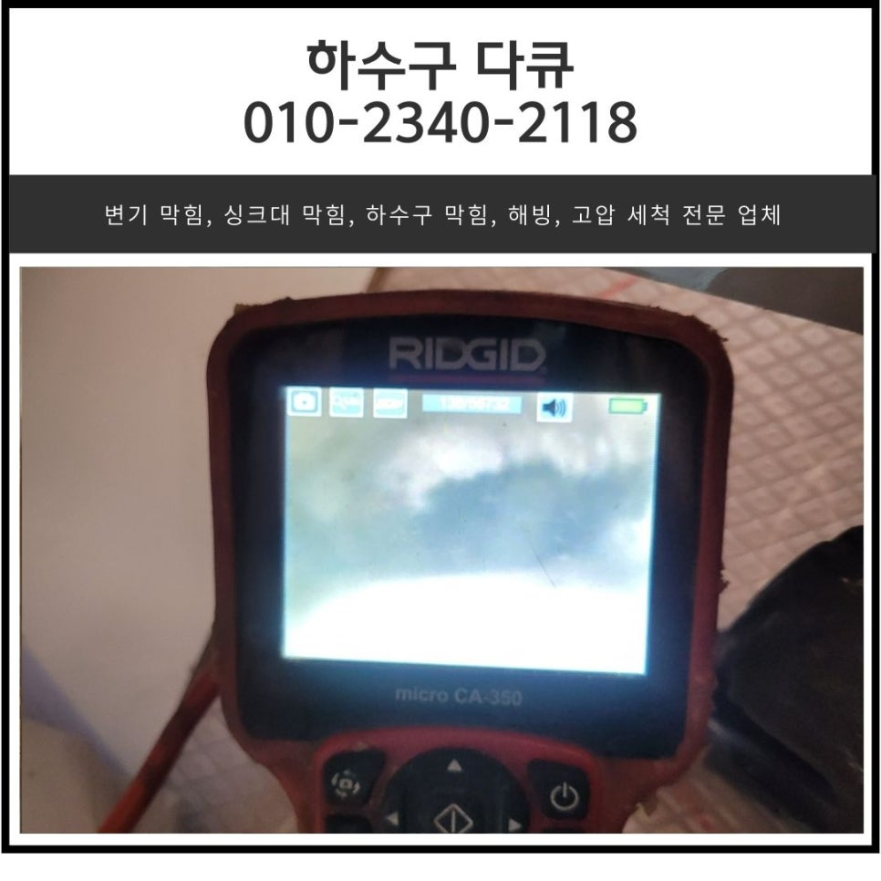
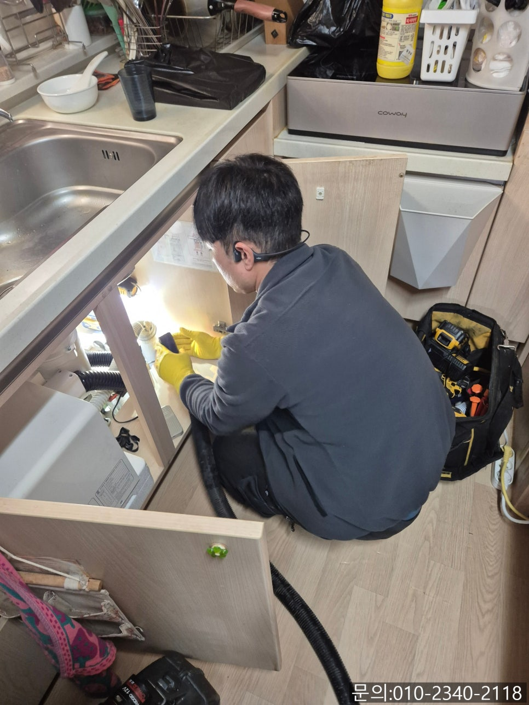
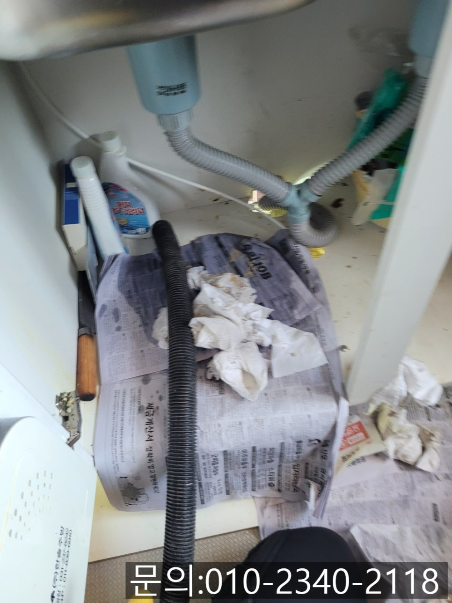
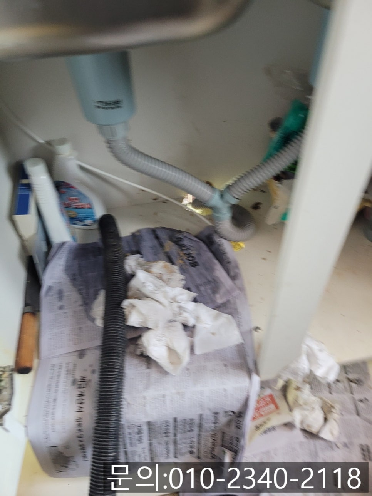
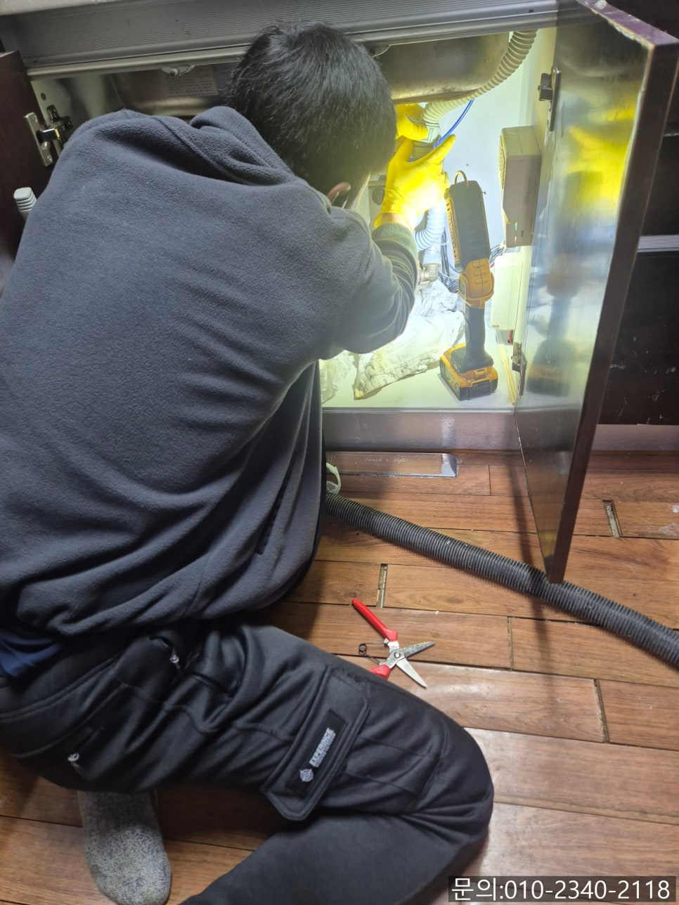
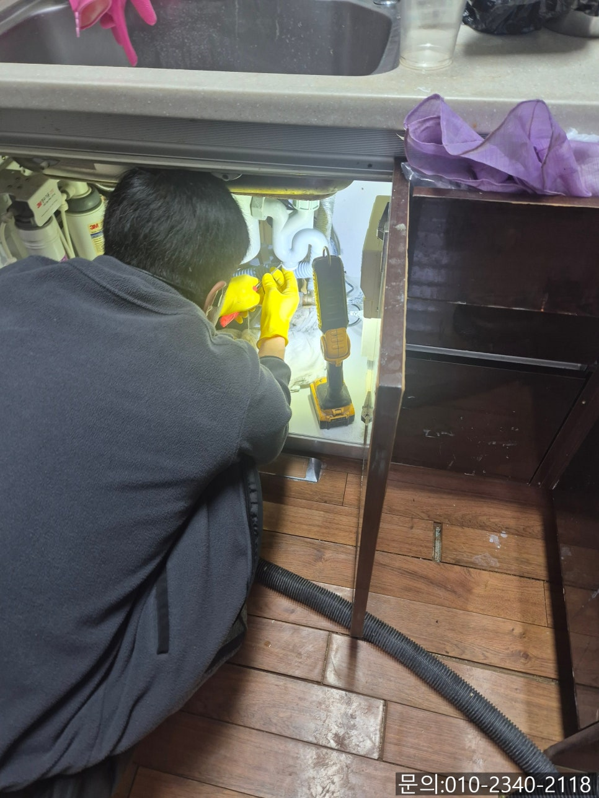
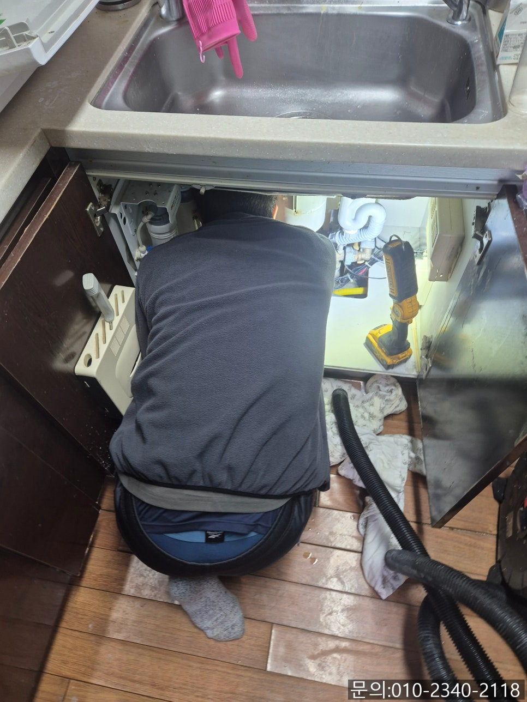

🏠 풍덕천동 싱크대 막힘 용인 신봉동 하수구 물 넘침 해결해 주는 전문 업체
용인 신봉동 싱크대막힘 전문 시공 후기

📋 작업 개요
- 위치: 용인 신봉동, 신봉동, 용인
- 서비스 유형: 싱크대막힘, 하수구막힘, 배관막힘, 누수수리, 역류해결, 뚫는업체
- 작업 일시: 2025. 3. 24. 21:38
- 업체명: 하수구수사대 (010-5615-2118)
🔍 문제 상황
안녕하세요.
풍덕천동 싱크대 막힘, 용인 신봉동 하수구 물 넘침 해결해 주는 전문 업체 하수구 다큐입니다.
풍덕천동 싱크대 막힘으로 물이 역류해 당황하셨던 적이 있으신가요?
풍덕천동 싱크대 막힘은 주방에서 가장 흔하게 발생하는 문제인데요.
가벼운 막힘부터 배관의 구조적 문제의 원인 등 다양한 문제로 인해 발생할 수 있습니다.
주방 싱크대에서 사용한 물이 흘러가지 않으면 불편할 뿐 아니라 악취, 아래층으로 누수까지 이어질 수 있어 빠른 해결이 필요합니다.

🔎 원인 분석
💡 전문가 진단: 정밀 진단 장비를 사용하여 슬러지의 고착 여부를 판명하고 타격/세척 작업을 실시했습니다.
오늘은 풍덕천동 싱크대 막힘으로 하수구 다큐가 방문해서 해결해 드리고 온 현장을 사진과 함께 소개해 드릴게요.
얼마 전부터 주방에서 식사를 마치고 정리하기 위해 싱크대에서 물을 사용하면 잘 내려가지 않더니 하수구가 막히고 역류까지 일어난다며 하수구 다큐로 문의를 주셨습니다.
고객님께 전화로 설명을 들어보니 배관 내부에 문제가 있는 것으로 판단되어 필요한 장비를 챙겨 신속하게 방문해 드렸어요.
풍덕천동 싱크대 막힘은 자주 발생하는 흔한 문제이지만, 원인이 다양하기 때문에 정확한 검사가 필요합니다.
현장에 도착해 보니 싱크대와 배관을 연결해 주는 부분에서도 역류가 발생하고 있는 상태였어요.
용인 신봉동 하수구 물 넘침으로 인해 주변에서 퀴퀴한 냄새도 나고 있어 신속하게 작업 준비를 했습니다.
며칠 전부터 물이 흘러가는 속도가 느려진 게 배관에 문제가 있다고 신호를 보냈던 것 같아요.

🔧 작업 과정
고객님께서도 이상함을 느끼시고 직접 뚫어보기 위해 여러 가지 방법을 찾아서 따라 해보셨다고 해요.
배수구 클리너도 구입해 부어보기도 하고, 뜨거운 물도 부어보고, 베이킹 소다와 식초 등을 사용해 뚫어보기 위해 시도해 보셨지만 단순한 막힘이 아니다 보니 해결되지 않았다고 하셨습니다.
여러 가지 방법을 시도해 봐도 해결되지 않고 점점 나빠지는 것 같아 결국 지인의 소개를 받아 용인 신봉동 하수구 물 넘침 해결해 주는 전문 업체 하수구 다큐로 연락을 주셨더라고요.
석션 장비를 사용해 이물질을 제거해 보니 통수가 시작되긴 했지만 내시경 카메라를 이용해 배관 내부를 점검해 보았습니다.
석션으로 많은 양의 이물질을 제거했지만 여전히 기름 슬러지가 많이 쌓여있는 상태였어요.
고객님께 이대로 싱크대를 사용하실지 아니면 이물질을 완벽히 제거하실 건지 여쭤보니, 그동안 주방에서 냄새도 나고 이용하는데 너무 불편했다며 깨끗하게 기름 슬러지를 제거해달라고 하셨습니다.
석션으로 제거되지 않는 기름 슬러지들은 플렉스 샤프트 장비를 사용해 제거하기로 했어요.
플렉스 샤프트 장비는 노즐 끝에 체인이 달려있는데요.
본체에 전동 드릴을 연결하여 작동시키면 그 힘을 전달받은 체인이 배관 내부에서 360도로 회전하면서 배관 내부에 붙어있는 이물질을 타격해 잘게 부서 주는 역할을 합니다.
잘게 갈린 기름 슬러지들은 다시 한번 석션을 이용해 빨아드려 배관에서 완벽하게 제거하는 작업을 진행해 줘야 다시 막힘이 발생하지 않습니다.


✅ 작업 완료
한참을 반복해서 플렉스 샤프트와 석션을 이용해 작업을 하면 배관 내부에 쌓여있던 이물질이 완벽하게 제거됩니다.
깨끗해진 배관 내부는 고객님께 내시경 카메라를 이용해 보여드린 다음, 싱크대에 많은 양의 물을 부어도 막힘이나 역류가 일어나지 않는 점도 테스트를 통해 직접 확인 시켜 드리고 작업을 마무리할 수 있었어요.
경기도 용인시 수지구 풍덕천로129번길 9 5층 590호




⚠️ 베란다 누수 및 방수 관리 방법
- ✅ 비가 많이 올 때 창틀 주변이나 아래층 천장에 얼룩이 생기는지 정기적으로 확인해 보세요.
- ✅ 우수관 주변 실리콘 마감이 들뜨거나 깨진 틈새가 있는지 손상 여부를 수시로 체크하세요.
- ✅ 베란다 바닥 타일의 줄눈(메지)이 소실되면 그 틈으로 물이 침투하여 누수가 유발됩니다.
- ✅ 누수 의심 증상 발견 시 방치하면 아래층 손실이 커지므로 즉시 전문가의 진단을 받으십시오.
💡 핵심 정리
- 확실한 장비 작업(내시경 점검 및 샤프트 스케일링)으로 원인을 뿌리 뽑습니다.
- 작업 후 1년 이내에 동일한 부위 재발 시 100% 무상 A/S 서비스를 보장합니다.
- 서울 · 경기 · 인천 전 지역에 24시간 언제든 긴급 출동할 수 있도록 항시 대기 중입니다.
❓ 자주 묻는 질문 (FAQ)
🚨 용인 신봉동 싱크대막힘 문제로 고민이신가요?
정확한 원인 진단과 확실한 시공으로 재발 없는 해결을 약속드립니다.
24시간 긴급 출동 | 서울 · 경기 · 인천 전지역 | 1년 내 재발 시 무상 A/S